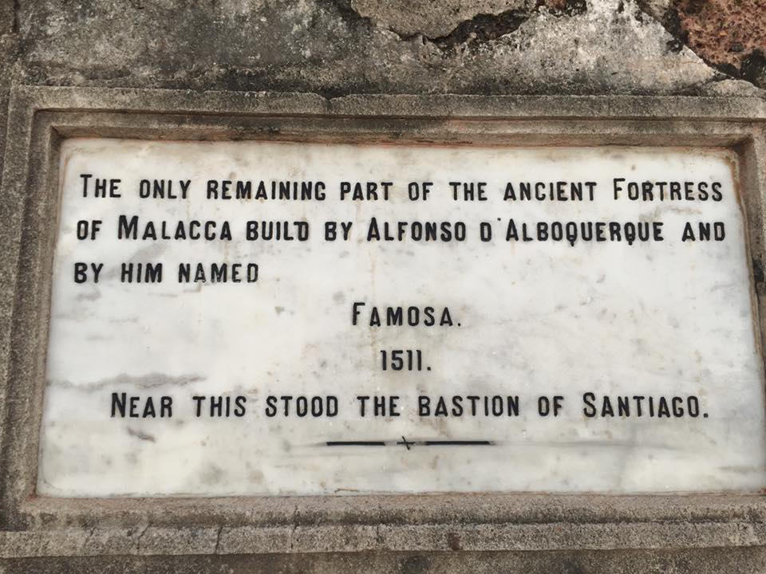
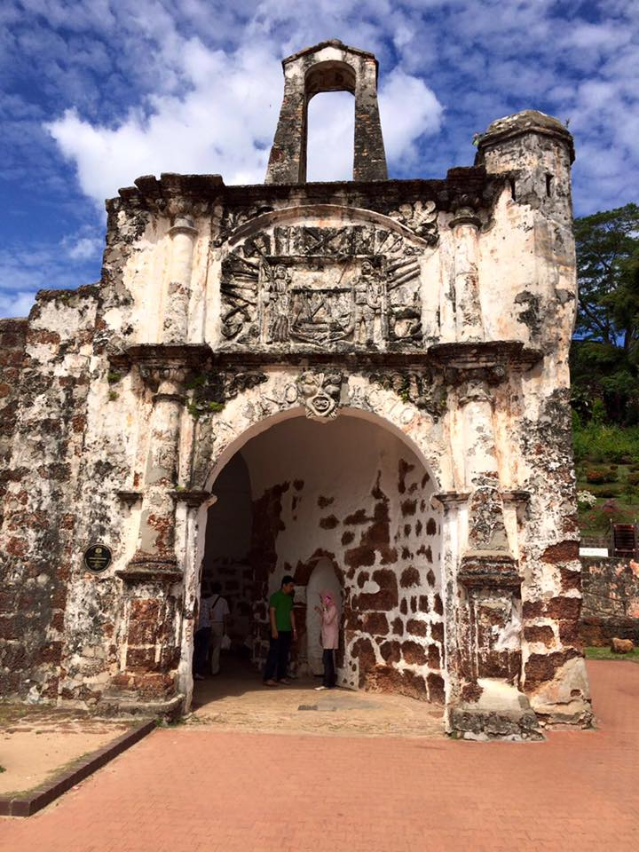
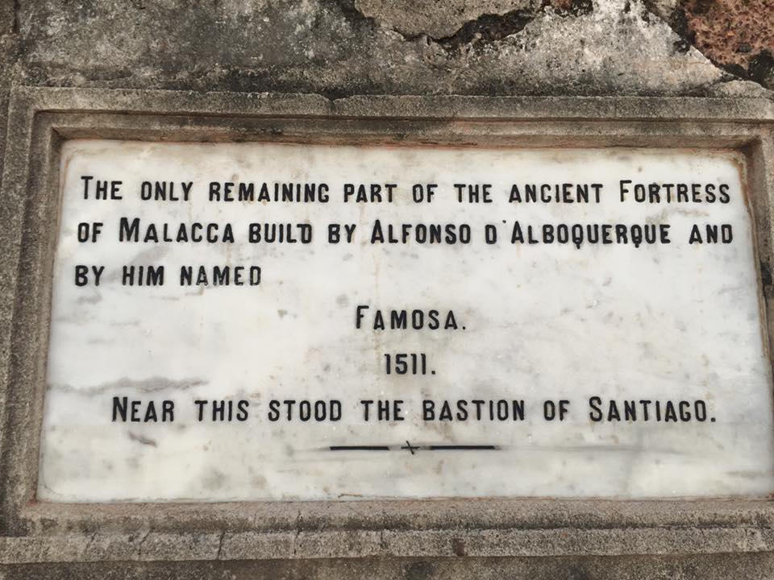
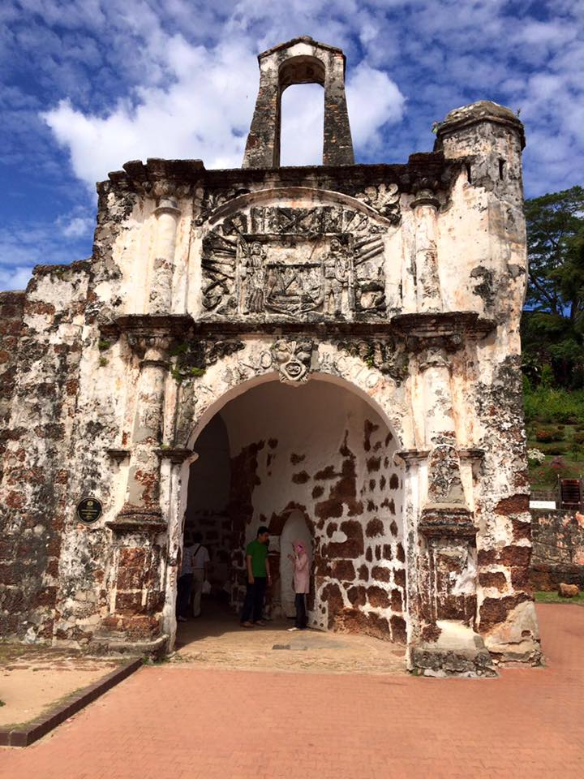
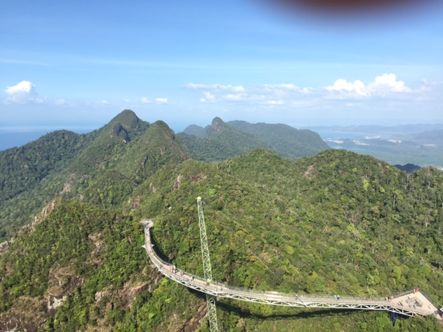
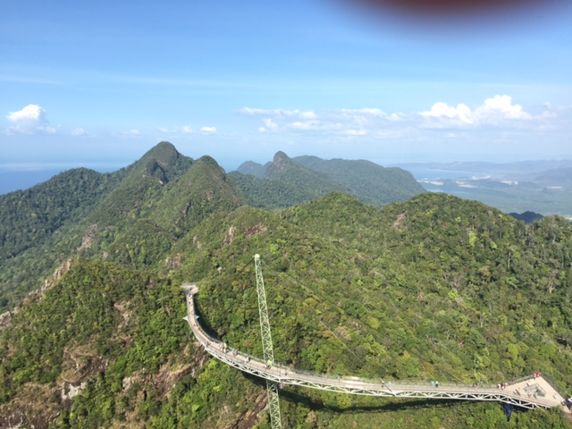

Extremely well located in Southeast Asia, Malaysia is a country full of diversity. You can whether browse in a large and exciting city as Kuala Lumpur (aka KL) or just relax at the beach in an exotic Island as Langkawi or The Perhentian or even visit famous UNESCO World Heritage sites such as Malacca or Georgetown, in Penang.
This sightseein gdiversity is also shared by its population. Malaysia is indeed a melting pot of ethnics, religions and languages. Half of the population is ethnically Malay but the other half are large minorities of Malaysian-Chinese and Malaysian-Indian and Indigenous. Despite a majority of +60% practices the Islamism, there is total freedom of religion, being Buddhism, Christianism and Hinduism other relevant religions.
But let us start with Kuala Lumpur, the largest city of Malaysia. KL is a modern city but has some old heritage as well. You have the iconic Petronas towers - the highest twin towers in the world - and, by contrast, the old buildings of Chinatown.
If you are looking for old heritage sites you should start with Merdeka Square, with its emblematic Mosque, and then head to Chinatown and to the Central Market. Here you can buy all sorts of souvenirs, including beautiful silk sarongs, bags, Malay garments, etc. Visiting the stunning Islamic Arts Museum is compulsory. Discover the rich Islamic culture and history: clothing, jewels, furniture, art crafts and models architecture of the most famous mosques in the world.
Are you in the mood for shopping? Then take a look into Suria KLCC mall (at Petronas twin towers) or into the modern Pavilion mall. Both have all the top and exclusive brands but other more affordable brands as well. The Pavilion is also a good spot to lunch or dine as it offers a set of very good restaurants for all tastes (Chinese, Japanese, Lebanese, Western, Indian, etc).
If you want to go up on the Petronas Towers, try to book the tickets in advance (there is no on line option, you have to go there directly). The amazing views worth a visit! But the best spot to take a selfie with the famous twin sisters is from KLCC Gardens just at the back of the mall. With all its shinning lights the building is even more beautiful at night!
The best place to go out at night is the Bukit Bintang area, with its famous Jalan Alor (Alor Street) full of outdoor restaurants, bars and animation. It is compulsory to eat Chinese food at one of the stalls of Jalon Alor!
If you want to have a relaxing massage try the Thai Odyssey SPA which is a chain store with several branches. The most central is in the Fahrenheit 88 mall, just in front of the Pavilion.
The best way to travel in KL is by Uber (extremely cheap), taxi or metro. For further afield sites you have train or buses.
If you have time for further afield visits go to the Batu Caves, just 45 minutes away by train. It is a mysterious Hindu shrine crowded with monkeys and 272 steps to be climbed! Or why not to visit UNESCO World Heritage Site Malacca, only 2 hours away from KL? It's a day-trip and you have buses every hour departing from the Central Bus Station.

 



Langkawi is the most well-known Malaysian island. It has wonderful lusting beaches and is full of good resorts and interesting programs. The famous Cenang beach (Pantai Cenang) has several resorts nearby but you can also chose to stay at a resort with a private beach. The best way to travel to Langkawi is by flight. Air Asia has daily hourly flights from KL.
To go up on Langkawi's Cable Car is a famous activity in this tropical island. The views are astonishing and you can walk on the sky bridge and take some awesome pictures from there.

 


But if what you're aiming is to relax at a white sand beach try Cenang. The water is warm and transparent and there are plenty of water activities to do. Don’t forget to use your sunblock and hat because the sun is very strong during high season! One excellet program is to explore by boat the islets in front of Langkawi. Discover the surprising shapes on the islets: the crocodile, the turtle, the wolf and the pregnant women! You should go early morning because after 12 the sun gets seriously hot!
You can explore Georgetown by foot and you even have 2 Hop On – Hop Off Bus Tours that will guide you to the main sightseeing around Georgetown and Penang. Georgetown has amazing Street Art within the city center. Ask for a city map at your hotel to hunt these artistic treasures and picture yourself with these graffiti! You can take amazing pictures to share on your Facebook or Instagram!
Then you should explore the cafes and bars of Georgetown. Love Lane Street is vibrant and has several bars with live music. Or why not to do some shopping at some fancy and trendy fashion shops? You will find them lovely! Try to capture the unique architecture of Penang as well. Despite most of the buildings aren’t well preserved, the British heritage is everywhere and you can nor deny the beauty of it.
Other popular activities are to climb to Penang Hill by funicular (breathtaking views from the top) or visit Kek Lot Si temple.
Visa: you have visa on arrival for most of the coutries but check it on line.
Currency: the official currency is the Malaysia ringgit. You have ATM everywhere.
Best time of the year to visit: in Malaysia the weather is very instable especially in KL. The monsoon are between November and March so it would be better to organize your trip from April to October. Nevertheless in KL or Penang the weather is not as important as in other islands such as Langkawi. Some islands even close during the monsoon, so plan your trip in advance.
Number of days: KL can be visited in 2 or 3 days, depending if you want to add further afield programs to your list or not. For Langkawi and Penang one weekend for each site is enough. Therefore you should never go less than 7 days to Malaysia.
Recommended Hotel: In KL there are thousands of offers but try to stay either near the vibrant area of Bukit Bintang or at the Golden Triangle area (near the Petronas Towers). In Langkawi try the Berjaya Langkawi Resort or The Westin Langkawi Resort and SPA, both have small private beaches. In Penang you should definitely stay in Georgetown: at 23 Lovelane hotel, a charming hotel in the heart of Georgetown or at The Blue Mansion - Cheong Fatt Tze, both charming boutique hotels.
Recommended Bars and Restaurants:
KL: There are plenty of bars with good views over the city or the Petronas Towers: Marini's 57 (at Petronas Tower), Sky Bar (on the rooftop bar of Traders Hotel, amazing view over the Petronas Tower), Heli Lounge KL (a former Heliport transformed in a bar with amazing views), Claret (wine bar on the rooftop bar of Troika building). Restaurants: Fuego, Strato (both on Troika building rooftop bar), Din Tai Fung (the best Dim Sum you've ever ate! At Pavilion mall), Kampachi (Japanese at Pavilion mall), Opium (great Asian food at Bukit Bintang neighborhood).
Langkawi: In Cenang you have a main road with a lot of tasty sea food restaurants.
Penang: 'Teksen' is a Chinese food restaurant and one of the best you will ever know but you have to book and arrive very early. 'China House' is a fancy Café, Bar and Restaurant, it has a tasty brunch but they're quite famous for their cakes and deserts. Just take a look at their cake's table!